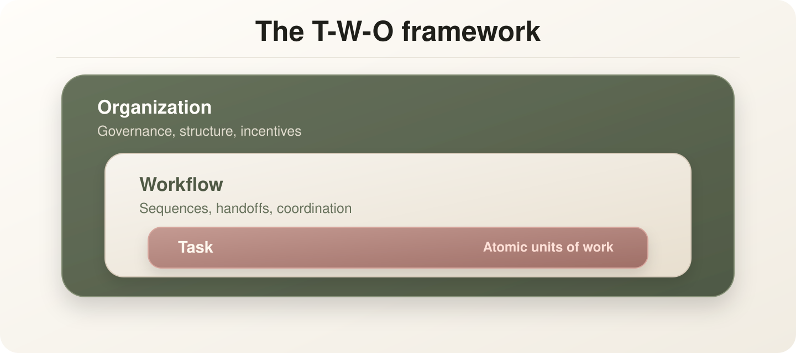

Blog
Why workflow ownership matters in the GenAI era

Posted: 8/19/26 | August 19th, 2026
AI changes what a task can produce, but ownership decides whether the redesigned workflow holds.
That is why workflow ownership matters. The first wave of GenAI adoption often begins with tools: a model drafts an email, summarizes a document, produces a first pass at analysis, or helps a team move faster through familiar work. Those gains are useful, but they usually sit inside an unchanged process. The task improves while the workflow around it stays vague.
A workflow is more than a task list. It includes intake, triage, handoffs, review, escalation, decision rights, records, and the moments where people decide whether the output is good enough to trust. Once AI enters the workflow, each of those points may need to move. Some steps can become faster. Some reviews become more important. Some handoffs disappear, while new validation steps appear.
Without an owner, those changes become informal. One person checks the AI output because they do not trust it yet. Another rewrites it before sharing. A manager asks for a second review. A team creates a side spreadsheet to track exceptions. Soon the organization has a new process, but nobody has actually designed it.
This is where the promised productivity often gets lost. Teams experience the validation tax: the extra work required to inspect, correct, explain, and defend AI-generated output. The model may be fast, but the surrounding workflow becomes slower because no one has authority to redesign the sequence.
Ownership makes the change practical. A workflow owner does not have to perform every step. Their job is to hold the whole sequence together. They decide where AI belongs, where human judgment should remain visible, what guardrails are required, what metrics matter, and when the workflow is ready to move beyond a pilot.
In the T-W-O approach, the redesign starts with real work: claims intake, customer escalation, policy review, monthly reporting, service recovery, research synthesis, or another workflow people already run. The team maps the current sequence, identifies where AI could improve speed, quality, consistency, or reuse, and then redesigns the handoffs around that new capability.
Consider a customer escalation workflow. AI might summarize the customer history, draft a response, identify similar cases, or suggest the next best action. Those are task-level improvements. The workflow-level question is different: who reviews the recommendation, when does the case move to a specialist, what evidence is recorded, and how does the team know the escalation was resolved in a better way?
This kind of ownership also makes adoption less abstract. Instead of asking employees to "use AI more," the organization asks them to improve a specific workflow with clear boundaries. People can see what changed, what stayed human, which decisions are now easier, and which risks still need review. That makes the change easier to teach, measure, and refine.
The important shift is from asking, "What can AI do?" to asking, "What work are we changing, and who owns the changed version?" That second question forces the organization to deal with accountability, adoption, and operating reality. It turns AI from a tool choice into a workflow decision.
If GenAI is going to become durable organizational change, ownership has to move with the work. Otherwise AI remains an impressive experiment sitting inside an old process. The real opportunity is to redesign the workflow so the organization knows what changed, why it changed, and who is responsible for making the new way of working hold.